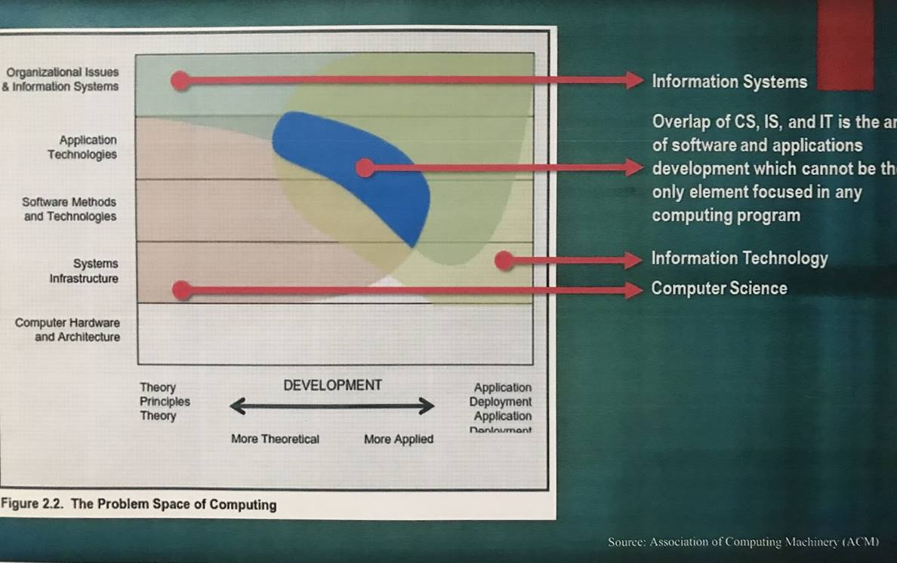

ComputingIt refers to a goal-oriented activity requiring, benefiting from, or associated with the creation and use of computers. It includes a variety of interpretations such as:
It also has other meanings that are more specific, based on the context in which the term is used. Example: An information systems specialist will view computing somewhat differently from a software engineer. Regardless of the context, doing computing well can be complicated and difficult. Because society needs people to do computing well, we must think of computing not only as a profession but also as a discipline. A student typically earns a bachelor’s degree in one of the computing disciplines to prepare for entry into the computing profession. Because computing provides such a wide range of choices, it is impossible for anyone to become proficient at all of them. Hence, an individual who wishes to become a computing professional requires some focus for his or her professional life. There are currently five major kinds of undergraduate degree programs in computing, and each one provides a different focus and perspective on the discipline of computing. Computing: A Family of DisciplinesPre-1990s: Computer science was on the technical side, and information systems were on the business side. During the 1990s:
Computing Disciplines & MajorsFollowing are the five main computing disciplines, their focus, and the kinds of problems and issues they address:
Body of KnowledgeGrowing Diversity in ComputingThe following framework will be used to sketch out the conceptual territory occupied by each of the five computing disciplines. These are informal illustrations used to communicate the task force’s subjective interpretation of the various disciplines. They are not based on any precise quantitative foundation. Furthermore, they show only computing topics. Both computer engineering and information systems programs devote significant attention to topics that are outside of computing and not reflected in this diagram.
Computer EngineeringComputer engineering covers the range from theory and principles to the practical applications of designing and implementing products using hardware and software. It narrows towards the center as we move upwards because a computer engineer’s interests narrow as we move away from the hardware. By the time we get up to the level of software development, we see that the computer engineer’s interest has narrowed to the horizontal center because they care about software only inasmuch as they need it to develop integrated devices.
Computer ScienceComputer science covers most of the vertical space between the extreme top and bottom because computer scientists generally do not deal with just the hardware that runs software or the organization that makes use of the information computing provides. They design and develop all types of software from systems infrastructure to application technologies. However, computer scientists do not typically manage the deployment of these systems.
Information SystemsInformation systems professionals are concerned with the relationship between information systems and the organizations they serve. Their role includes system deployment, configuration, and training of users. IS professionals often tailor application technologies to meet enterprise needs, sometimes developing systems that utilize other software products to suit their organizations’ information needs.
Information TechnologyInformation technology focuses on application, deployment, and configuration needs across a wide spectrum. IT people often develop web-enabled digital technologies and create foundations in relevant principles and theory. IT is still a new discipline, and its focus has been on educational programs that give students a foundation in existing concepts and skills.
Software EngineeringSoftware engineering covers a wide range of needs in large-project software expertise. Its main goal is to develop systematic models and reliable techniques for producing high-quality software on time and within budget. SE’s domain extends from theory and principles to robust systems infrastructure and organizational information systems.
 |